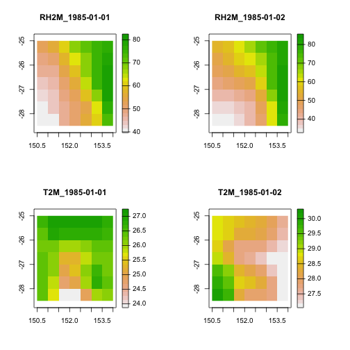
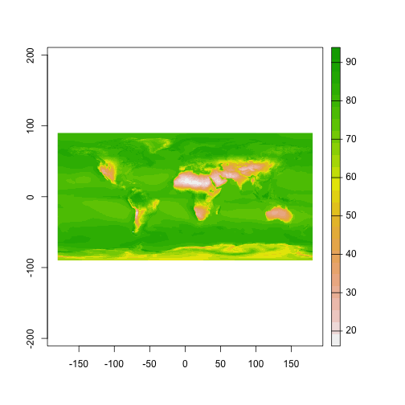
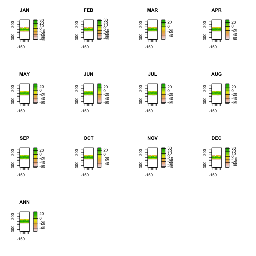

nasapower aims to make it quick and easy to automate downloading NASA POWER global meteorology, surface solar energy and climatology data data in your R session as a tidy data frame for analysis and use in modelling or other purposes using get_power(). POWER (Prediction Of Worldwide Energy Resource) data are freely available for download through a web interface at a resolution of 1/2 arc degree longitude by 1/2 arc degree latitude.
get_power to Fetch POWER DataThe get_power() function has five arguments as seen in this example and returns a data frame with a metadata header in the current R session.
Fetch daily “AG” community temperature, relative humidity and precipitation for January 1985 for Kingsthorpe, Queensland, Australia.
library(nasapower)
daily_single_ag <- get_power(
community = "AG",
lonlat = c(151.81, -27.48),
pars = c("RH2M", "T2M", "PRECTOT"),
dates = c("1985-01-01", "1985-01-31"),
temporal_average = "DAILY"
)
daily_single_ag
#> NASA/POWER SRB/FLASHFlux/MERRA2/GEOS 5.12.4 (FP-IT) 0.5 x 0.5 Degree Daily Averaged Data
#> Dates (month/day/year): 01/01/1985 through 01/31/1985
#> Location: Latitude -27.48 Longitude 151.81
#> Elevation from MERRA-2: Average for 1/2x1/2 degree lat/lon region = 434.55 meters Site = na
#> Climate zone: na (reference Briggs et al: http://www.energycodes.gov)
#> Value for missing model data cannot be computed or out of model availability range: NA
#>
#> Parameters:
#> T2M MERRA2 1/2x1/2 Temperature at 2 Meters (C) ;
#> PRECTOT MERRA2 1/2x1/2 Precipitation (mm day-1) ;
#> RH2M MERRA2 1/2x1/2 Relative Humidity at 2 Meters (%)
#>
#> # A tibble: 31 x 10
#> LON LAT YEAR MM DD DOY YYYYMMDD RH2M T2M
#> <dbl> <dbl> <dbl> <int> <int> <int> <date> <dbl> <dbl>
#> 1 152. -27.5 1985 1 1 1 1985-01-01 48.9 25.1
#> 2 152. -27.5 1985 1 2 2 1985-01-02 41.8 28.4
#> 3 152. -27.5 1985 1 3 3 1985-01-03 40.4 27.5
#> 4 152. -27.5 1985 1 4 4 1985-01-04 46.4 24.6
#> 5 152. -27.5 1985 1 5 5 1985-01-05 50.8 26.5
#> 6 152. -27.5 1985 1 6 6 1985-01-06 58.6 26.8
#> 7 152. -27.5 1985 1 7 7 1985-01-07 61.1 27.0
#> 8 152. -27.5 1985 1 8 8 1985-01-08 66.5 25.1
#> 9 152. -27.5 1985 1 9 9 1985-01-09 55.8 26.1
#> 10 152. -27.5 1985 1 10 10 1985-01-10 41.2 27.0
#> # … with 21 more rows, and 1 more variable: PRECTOT <dbl>Fetch daily “AG” community relative humidity and temperature for south east Queensland region.
daily_region_ag <- get_power(
community = "AG",
lonlat = c(150.5, -28.5 , 153.5, -25.5),
pars = c("RH2M", "T2M"),
dates = c("1985-01-01", "1985-01-02"),
temporal_average = "DAILY"
)
daily_region_ag
#> NASA/POWER SRB/FLASHFlux/MERRA2/GEOS 5.12.4 (FP-IT) 0.5 x 0.5 Degree Daily Averaged Data
#> Dates (month/day/year): 01/01/1985 through 01/02/1985
#> Location: Regional
#> Elevation from MERRA-2: Average for 1/2x1/2 degree lat/lon region = na meters Site = na
#> Climate zone: na (reference Briggs et al: http://www.energycodes.gov)
#> Value for missing model data cannot be computed or out of model availability range: NA
#>
#> Parameters:
#> RH2M MERRA2 1/2x1/2 Relative Humidity at 2 Meters (%) ;
#> T2M MERRA2 1/2x1/2 Temperature at 2 Meters (C)
#>
#> # A tibble: 98 x 9
#> LON LAT YEAR MM DD DOY YYYYMMDD RH2M T2M
#> <dbl> <dbl> <dbl> <int> <int> <int> <date> <dbl> <dbl>
#> 1 151. -28.2 1985 1 1 1 1985-01-01 39.7 26.5
#> 2 151. -28.2 1985 1 1 1 1985-01-01 40.4 25.8
#> 3 152. -28.2 1985 1 1 1 1985-01-01 47.0 24.0
#> 4 152. -28.2 1985 1 1 1 1985-01-01 51.8 23.9
#> 5 153. -28.2 1985 1 1 1 1985-01-01 56.2 24.9
#> 6 153. -28.2 1985 1 1 1 1985-01-01 62.5 26.0
#> 7 154. -28.2 1985 1 1 1 1985-01-01 74.7 26.1
#> 8 151. -27.8 1985 1 1 1 1985-01-01 41.3 26.5
#> 9 151. -27.8 1985 1 1 1 1985-01-01 43.4 26.0
#> 10 152. -27.8 1985 1 1 1 1985-01-01 47.6 24.8
#> # … with 88 more rowsFetch interannual solar cooking parameters for south east Queensland region.
interannual_sse <- get_power(
community = "SSE",
lonlat = c(150.5, -28.5 , 153.5, -25.5),
dates = c("1984", "1985"),
temporal_average = "INTERANNUAL",
pars = c("CLRSKY_SFC_SW_DWN",
"ALLSKY_SFC_SW_DWN")
)
interannual_sse
#> NASA/POWER SRB/FLASHFlux/MERRA2/GEOS 5.12.4 (FP-IT) 0.5 x 0.5 Degree Interannual Averages/Sums
#> Dates (month/day/year): 01/01/1984 through 12/31/1985
#> Location: Regional
#> Elevation from MERRA-2: Average for 1/2x1/2 degree lat/lon region = na meters Site = na
#> Climate zone: na (reference Briggs et al: http://www.energycodes.gov)
#> Value for missing model data cannot be computed or out of model availability range: NA
#>
#> Parameters:
#> CLRSKY_SFC_SW_DWN SRB/FLASHFlux 1/2x1/2 Clear Sky Insolation Incident on a Horizontal Surface (kW-hr/m^2/day) ;
#> ALLSKY_SFC_SW_DWN SRB/FLASHFlux 1/2x1/2 All Sky Insolation Incident on a Horizontal Surface (kW-hr/m^2/day)
#>
#> # A tibble: 196 x 17
#> LON LAT PARAMETER YEAR JAN FEB MAR APR MAY JUN
#> <dbl> <dbl> <chr> <dbl> <dbl> <dbl> <dbl> <dbl> <dbl> <dbl>
#> 1 151. -28.2 CLRSKY_S… 1984 8.5 7.96 6.92 5.54 4.49 3.89
#> 2 151. -28.2 CLRSKY_S… 1985 8.87 8.1 6.94 5.6 4.44 4.03
#> 3 151. -28.2 ALLSKY_S… 1984 6.11 6.83 6.28 4.6 4.02 3.46
#> 4 151. -28.2 ALLSKY_S… 1985 8.2 7.15 6.02 4.79 3.89 3.44
#> 5 151. -28.2 CLRSKY_S… 1984 8.45 8.09 6.77 5.5 4.41 3.95
#> 6 151. -28.2 CLRSKY_S… 1985 8.76 8.03 6.93 5.57 4.39 3.93
#> 7 151. -28.2 ALLSKY_S… 1984 5.82 6.43 5.95 4.41 3.89 3.54
#> 8 151. -28.2 ALLSKY_S… 1985 7.98 6.86 5.74 4.46 3.67 3.34
#> 9 152. -28.2 CLRSKY_S… 1984 8.45 8.09 6.77 5.5 4.41 3.95
#> 10 152. -28.2 CLRSKY_S… 1985 8.76 8.03 6.93 5.57 4.39 3.93
#> # … with 186 more rows, and 7 more variables: JUL <dbl>, AUG <dbl>,
#> # SEP <dbl>, OCT <dbl>, NOV <dbl>, DEC <dbl>, ANN <dbl>Global data are only available for the climatology temporal_average, setting this argument as such will fetch global data.
Fetch global “AG”" climatology for temperature and relative humidity.
climatology_ag <- get_power(
community = "AG",
pars = c("T2M", "RH2M"),
lonlat = "GLOBAL",
temporal_average = "CLIMATOLOGY"
)
climatology_ag
#> NASA/POWER SRB/FLASHFlux/MERRA2/GEOS 5.12.4 (FP-IT) 0.5 x 0.5 Degree Climatologies
#> 22-year Additional Solar Parameter Monthly & Annual Climatologies (July 1983 - June 2005), 30-year Meteorological and Solar Monthly & Annual Climatologies (January 1984 - December 2013)
#> Location: Global
#> Value for missing model data cannot be computed or out of model availability range: NA
#> Parameter(s):
#> RH2M MERRA2 1/2x1/2 Relative Humidity at 2 Meters (%)
#>
#> Parameters:
#> NA;
#> T2M MERRA2 1/2x1/2 Temperature at 2 Meters (C)
#>
#> # A tibble: 518,400 x 16
#> LON LAT PARAMETER JAN FEB MAR APR MAY JUN JUL
#> <dbl> <dbl> <chr> <dbl> <dbl> <dbl> <dbl> <dbl> <dbl> <dbl>
#> 1 -180. -89.8 T2M -29.0 -40.7 -52.9 -57.8 -59.1 -59.6 -61.3
#> 2 -180. -89.8 RH2M 70.3 64.3 63.5 63.2 63.9 64.2 63.9
#> 3 -179. -89.8 T2M -29.0 -40.7 -52.9 -57.8 -59.1 -59.6 -61.3
#> 4 -179. -89.8 RH2M 70.3 64.3 63.4 63.2 63.9 64.2 63.9
#> 5 -179. -89.8 T2M -29.0 -40.7 -52.9 -57.8 -59.1 -59.6 -61.3
#> 6 -179. -89.8 RH2M 70.3 64.3 63.4 63.2 63.9 64.2 63.9
#> 7 -178. -89.8 T2M -29.0 -40.7 -52.9 -57.8 -59.1 -59.6 -61.3
#> 8 -178. -89.8 RH2M 70.3 64.3 63.4 63.2 63.9 64.2 63.9
#> 9 -178. -89.8 T2M -29.0 -40.7 -52.9 -57.8 -59.1 -59.6 -61.3
#> 10 -178. -89.8 RH2M 70.3 64.3 63.4 63.2 63.9 64.2 63.8
#> # … with 518,390 more rows, and 6 more variables: AUG <dbl>,
#> # SEP <dbl>, OCT <dbl>, NOV <dbl>, DEC <dbl>, ANN <dbl>Note the associated metadata in the data frame header are not saved if the data are exported to a file format other than an R data format, e.g., .Rdata, .rda or .rds.
get_power
community, a text string with valid values of: “AG” (Agroclimatology), “SSE” (Surface meteorology and Solar Energy) or “SB” (Sustainable Buildings). The selected user community will affect the units of the parameter and the temporal display of time series data (e.g., “AG” will use MJ/m2/day for radiation units, while SSE and SB use kW/m2/day as units).
lonlat, A numeric vector of geographic coordinates for a cell or region entered as x, y coordinates. Not used when temporal_average is set to “CLIMATOLOGY”.
For a single point To get a specific cell, 1/2 x 1/2 degree, supply a length-two numeric vector giving the decimal degree longitude and latitude in that order for data to download, e.g., lonlat = c(-89.5, -179.5).
For regional coverage To get a region, supply a length-four numeric vector as lower left (lon, lat) and upper right (lon, lat) coordinates, e.g., lonlat = c(xmin, ymin, xmax, ymax) in that order for a given region, e.g., a bounding box for the south-western corner of Australia: lonlat = c(112.5, -55.5, 115.5, -50.5). Max bounding box is 10 x 10 degrees of 1/2 x 1/2 degree data, i.e., 100 points maximum in total.
pars. A character vector of parameters to download. See help(parameters) for a full list of valid values and definitions. If downloading “CLIMATOLOGY” a maximum of 3 pars can be specified at one time, for “DAILY” and “INTERANNUAL” a maximum of 20 can be specified at one time.
dates, a vector of start and end dates for which to query the POWER API, e.g., dates = c("1983-01-01", "2017-12-31").
temporal_average, a character vector of the desired temporal average(s). Valid values are “DAILY”, “INTERANNUAL” and “CLIMATOLOGY”.
get_power
If you require spatial objects to work with, it is rather simple to convert the resulting tidy data frame from get_power() to a spatial object in R using terra::rast(type = "xyz").
Using lapply and split it is easy to create stacks of raster objects from a regional query.
library("terra")
#> terra version 0.8.6 (beta-release)
# Use split to create a list of data frames split by YYYYMMDD
daily_region_ag <- split(daily_region_ag, daily_region_ag$YYYYMMDD)
# Remove date information from data frame, list names will carry YYYYMMDD
daily_region_ag <-
lapply(
X = daily_region_ag,
FUN = function(x)
x[(!names(x) %in% c("YEAR", "MM", "DD", "DOY", "YYYYMMDD"))]
)
# Convert the data into matrix() objects for terra to work with
daily_region_ag <- lapply(X = daily_region_ag, FUN = as.matrix)
# Create a list of raster bricks from each YYYYMMDD data frame
RH2M_list <- lapply(
X = daily_region_ag,
FUN = function(x)
rast(x[, 1:3],
crs = "+proj=eqc +lat_ts=0 +lat_0=0 +lon_0=0 +x_0=0 +y_0=0 +ellps=WGS84 +datum=WGS84 +units=m +no_defs",
type = "xyz")
)
T2M_list <- lapply(
X = daily_region_ag,
FUN = function(x)
rast(x[, c(1:2, 4)],
crs = "+proj=eqc +lat_ts=0 +lat_0=0 +lon_0=0 +x_0=0 +y_0=0 +ellps=WGS84 +datum=WGS84 +units=m +no_defs",
type = "xyz")
)
raster_stack <- rast(c(RH2M_list, T2M_list))
names(raster_stack) <-
paste0(names(raster_stack), "_", rep(names(daily_region_ag), times = 2))Plot all the items in the stack.
plot(raster_stack)
Converting global climatology to a terra objects is as simple as querying and then converting the resulting tibble to a terra object using terra::rast(type = "xyz")*. Illustrated here using the climatology_ag object previously created are two methods.
*: You may experience issues if you have <16GB RAM available converting the entire object to a terra::rast().
For low-memory systems, a computer with 8GB or less RAM, it is useful to have as much of your R global environment free from objects that take much memory and make sure other processes are not using system memory.
Using indexing pick the month or annual value and create a raster object. In this case, column 15 is the annual average, climatology_list$RH2M[, c(1:2, 15)].
# split data frame into data frames for each parameter in a list
climatology_list <- split(climatology_ag, climatology_ag$PARAMETER)
# Remove PARAMETER information from data frame, list names supply this
climatology_list <-
lapply(climatology_list, function(x) {
x["PARAMETER"] <- NULL
x
})
# Convert the data into matrix() objects for terra to work with
climatology_list <- lapply(X = climatology_list, FUN = as.matrix)
RH2M_ann <- rast(climatology_list$RH2M[, c(1:2, 15)],
crs = "+proj=eqc +lat_ts=0 +lat_0=0 +lon_0=0 +x_0=0 +y_0=0 +ellps=WGS84 +datum=WGS84 +units=m +no_defs",
type = "xyz")
RH2M_ann
#> class : SpatRaster
#> dimensions : 360, 720, 1 (nrow, ncol, nlyr)
#> resolution : 0.5, 0.5 (x, y)
#> extent : -180, 180, -90, 90 (xmin, xmax, ymin, ymax)
#> coord. ref. :
#> data source : memory
#> names : ANN
#> min values : 15.88
#> max values : 93.92
plot(RH2M_ann)
For systems with RAM of ~16GB or more, it is possible to create a terra::rast() of the resulting POWER query. To do so, subset the tibble() for the desired parameter and drop the PARAMETER column.
# Remove the parameter column and conver to a matrix() object for terra
T2M <- as.matrix(subset(climatology_ag, PARAMETER == "T2M")[, -3])
# Preallocate a list and name it for filling with SpatRaster objects
T2M_list <- vector(mode = "list", length = 13)
names(T2M_list) <- colnames(T2M)[-c(1:2)]
# in a loop, convert each month into a SpatRaster object
for (i in colnames(T2M)[-c(1:2)]) {
T2M_list[[i]] <- rast(T2M[, c("LON", "LAT", i)],
crs = "+proj=eqc +lat_ts=0 +lat_0=0 +lon_0=0 +x_0=0 +y_0=0 +ellps=WGS84 +datum=WGS84 +units=m +no_defs",
type = "xyz")
}
# create a stack of SpatRaster objects
T2M <- c(rast(T2M_list))
plot(T2M)